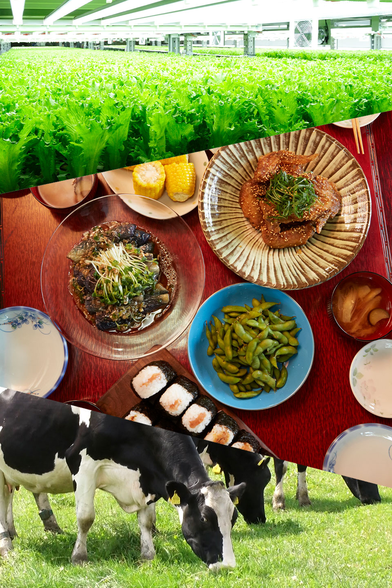

株式会社日本食農連携ビジネス
| 本店所在地 | 東京都 千代田区内幸町１－１－１ 帝国ホテルタワー11階 Ｃ-５ |
|
|---|---|---|
| 役員等 | 取締役 |
|
| 監査役 |
|
|
| 顧問 |
|
|
| 資本金 | ５百万円 | |
| 出資者 | (一社)日本食農連携機構（過半） ほか | |


当機構のネットワークを活かし、農業トップリーダーの意見を参考に生産性等を反映した農業経営体の評価に取り組みます。
後継者がいない、あるいは経営継続が困難な農業経営者等と規模拡大したい農業法人したい企業等とのマッチングを支援。
農業トップリーダー等と連携し、ベンチャーキャピタル等とともに、出資受け入れ後の事業展開のサポートを行います。

若手農業経営者・現場リーダーの育成や地域の食農連携にかかる勉強会やイベントを開催。
当機構のネットワークを活かしニーズに合った講師を選定、事業運営を担います。

若手農業経営者・現場リーダーの育成や地域の食農連携にかかる勉強会やイベントを開催。
当機構のネットワークを活かしニーズに合った講師を選定、事業運営を担います。
卸売業者・加工業者等と連携し、販売力強化に向け、県域を超えた産地間の連携を支援。
農業法人・JAの販売力強化に向けた取り組みを当機構のネットワークを活かしサポートします。